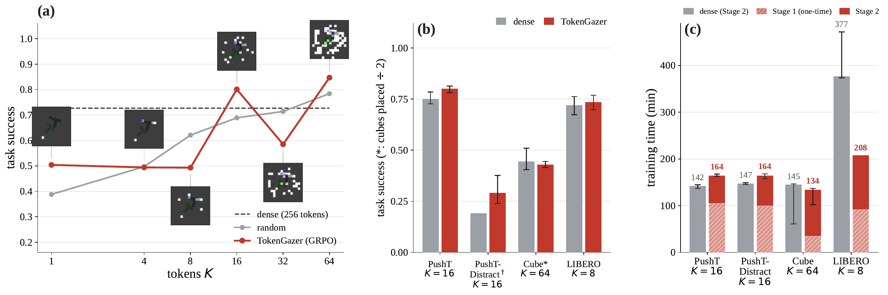
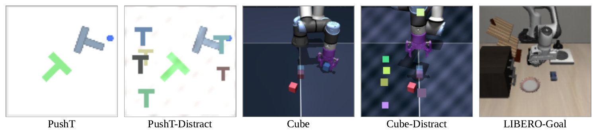
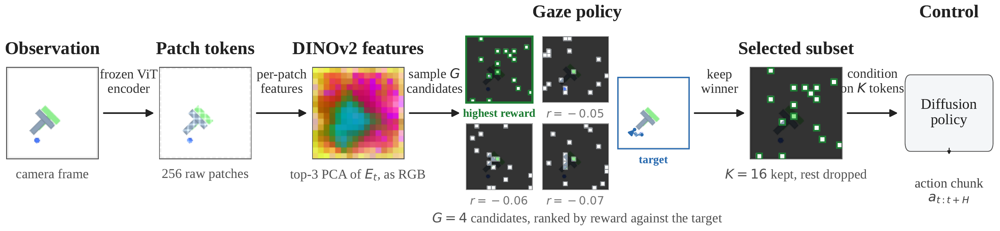
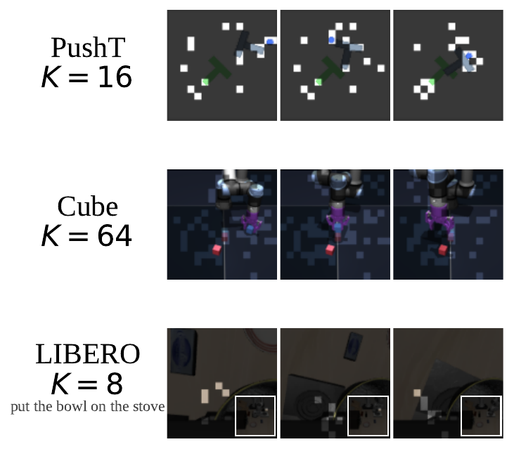
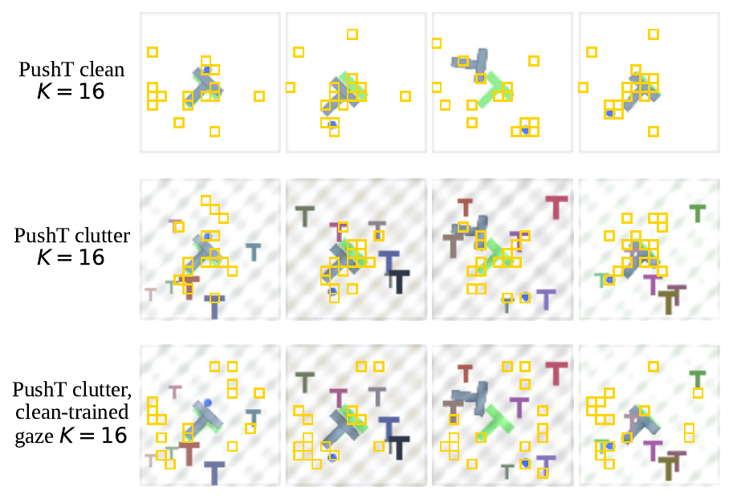

In robot policies, using dense tokens from pretrained vision transformers, rather than a compressed global representation, preserves rich spatial structure and enables spatial reasoning and strong performance. However, dense representations come with two problems. First, policies that consume all tokens can be computationally expensive to train and can be slow at inference time. Second, dense token sets typically carry task-irrelevant information, such as background details, noise, clutter, and distractors. Conditioning on such redundant token sets can hurt policy generalization. In this work, we introduce TokenGazer, a policy that selects a small subset of tokens carrying task-relevant information, minimizing redundant information passed downstream while preserving the benefits of pretrained dense features and avoiding the need to fine-tune large model encoders. A key challenge is choosing the right training signal for this selection: a reconstruction objective rewards tokens that preserve visual fidelity rather than ones useful for control. Instead, we reward our token selection policy with a behavior cloning objective on a downstream action head conditioned on the selected tokens. We train the token policy and the action head alternately. Our policies conditioned on this sparse token subset outperform or at least match full-token-conditioned policy performance while processing far fewer tokens per step. This trend is more evident when the robot encounters out-of-distribution scenes.


A frozen DINOv2 vision transformer maps each observation to N patch embeddings (N = 256 per camera; LIBERO uses two cameras, N = 512). Since the value of a token subset can only be judged by how well a policy trained on it performs, TokenGazer splits the problem into two stages. Stage 1 trains a lightweight gaze policy with Group Relative Policy Optimization (GRPO): for every frame, a group of candidate K-token subsets is scored by a frozen action-prediction reward head that measures how accurately an expert action chunk can be recovered from that subset alone, and the gaze policy is updated on the resulting group-relative advantage. On LIBERO, where the same scene supports several language-specified tasks, the gaze and the reward head also receive the task instruction. Stage 2 freezes the gaze and trains a diffusion policy to act on its selections, drawing the training subset per step as a 50/50 mix of the gaze's own greedy picks and a uniformly random K-token subset, while always deploying with the gaze's greedy top-K. Because the control policy attends only to the K tokens it is actually given, both its sequence length and its computational cost scale directly with K.



Closed-loop rollouts from the final Stage-2 checkpoints, rendered from the trained policies with the gaze's selected patches overlaid at every control step. Each caption reports the metric the paper itself uses for that benchmark: PushT and PushT-Distract use the clipped coverage score (not a binary success flag), Cube reports cubes placed of 2, and LIBERO-Goal reports binary success together with the task instruction.
PushT, K = 64, score 0.99
PushT, K = 64, score 0.98
PushT-Distract, K = 16, clean scene, score 0.43
PushT-Distract, K = 16, clean scene, score 0.35
PushT-Distract, K = 16, severity-2 live clutter, score 0.39
PushT-Distract, K = 16, severity-2 live clutter, score 0.38
Cube, K = 64, 2 of 2 cubes placed
Cube, K = 64, 1 of 2 cubes placed
LIBERO-Goal, K = 8, success — "Open the middle drawer of the cabinet"
LIBERO-Goal, K = 8, success — "Put the bowl on the stove"
Every benchmark is evaluated vision-only. Cells below are each method's best closed-loop score over its own measured token budgets, with that best K as a subscript.
| Method | PushT | PushT-Distract | Cube | Cube-Distract | LIBERO |
|---|---|---|---|---|---|
| Dense (256 tok.)‡ | 0.75 | 0.19 | 0.89 | 0.51 | 0.72 |
| Pooled | 0.804 | 0.1164 | 0.268 | 0.3164 | n/a |
| Random | 0.7864 | 0.2564 | 0.7164 | 0.2164 | 0.7164 |
| Attention-norm | 0.6916 | 0.1464 | 0.068 | 0.1764 | 0.2464 |
| Center | 0.6516 | 0.1364 | 0.118 | 0.1564 | 0.2164 |
| TokenGazer | 0.8564 | 0.3064 | 0.8832 | 0.5364 | 0.8264 |
Each cell is a method's best closed-loop score over its own measured token budgets on that benchmark, with that best K as a subscript (e.g. 0.8564). Bold marks the best-performing selection method per column; dense is the reference being selected against, not a competitor, so it is never bolded even where it is the numeric maximum (e.g. Cube: TokenGazer's 0.88 at K = 32 is parity with dense's 0.89, not a loss). ‡Dense is 256 tokens except LIBERO, which is 512. TokenGazer's row is GRPO at every entry except PushT, where a Gumbel-softmax variant is also measured but is lower at every K.
| Method | K=1 | K=4 | K=8 | K=16 | K=32 | K=64 |
|---|---|---|---|---|---|---|
| Dense (256 tok.) | 0.75 | |||||
| Pooled | 0.59 | 0.80 | n/a | 0.77 | n/a | 0.74 |
| Random | 0.39 | 0.50 | 0.62 | 0.69 | 0.71 | 0.78 |
| TokenGazer (GRPO) | 0.50 | 0.49 | 0.49 | 0.80 | 0.58 | 0.85 |
| TokenGazer (Gumbel) | 0.59 | 0.52 | 0.52 | 0.57 | 0.63 | 0.58 |
TokenGazer (GRPO) is non-monotonic in K: it dips below random at K = 32 before recovering at K = 64. These are real per-K measurements, not a smoothed curve. Bold marks each baseline's own best cell. Seeds: TokenGazer (GRPO) at K = 16, 64 and Random at K = 32, 64 are means of 3; every other cell is a single seed.
Stage 2 alone is 2.3×, 2.3×, 1.46×, and 3.2× cheaper than dense on PushT, PushT-Distract, Cube, and LIBERO respectively, and deployment conditions on K tokens instead of 256 (512 for LIBERO). Counting Stage 1 (reward-head and selector training) changes the picture: end-to-end TokenGazer training is cheaper than dense on LIBERO (0.55×) and Cube (0.92×), but slightly more expensive on PushT (1.15×) and PushT-Distract (1.12×). Stage 1 is a real cost that does not always pay for itself within a single training run, but it is paid once per selector, amortised across every K and every Stage-2 policy trained on it. Panel (c) of the teaser figure above plots this Stage 1 + Stage 2 breakdown; the same numbers, per benchmark and stage, are below.
| Benchmark | Method | Stage 1 (head + selector) | Stage 2 | Total |
|---|---|---|---|---|
| PushT K=16 | TokenGazer | 63† + 42 = 105 | 62 | 167 |
| Dense | – | 145 | 145 | |
| PushT-Distract K=16 | TokenGazer | 63 + 37 = 100 | 64 | 164 |
| Dense | – | 147 | 147 | |
| Cube K=64 | TokenGazer | 17 + 18 = 35 | 99 | 134 |
| Dense | – | 145 | 145 | |
| LIBERO K=8 | TokenGazer | 26 + 66 = 92 | 117 | 209 |
| Dense | – | 377 | 377 |
Stage 1 is head-training plus selector-training (GRPO); dense has no Stage 1. †Clean PushT's head-training run did not survive the V100-only filter used here; its Stage 1 reuses the PushT-Distract head-training time (same reward-head configuration) as the best available estimate, so its Total is an estimate, not a direct measurement, unlike every other cell.